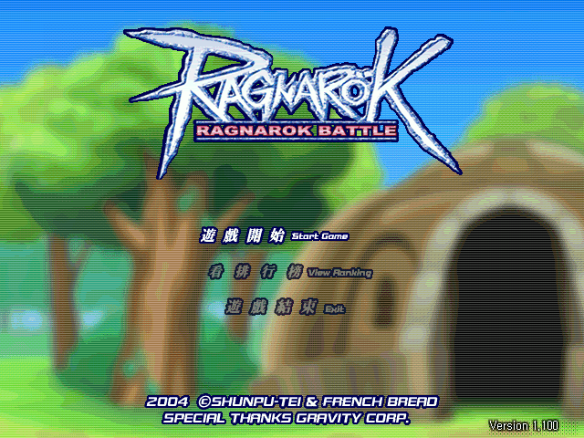

名稱：仙境傳說格鬥版 (Ragnarok Battle Offline，中文版)
簡介：韓國Gravity 2004出品的橫向捲軸動作遊戲，為仙境傳說的衍生同人作品，2005年由
智冠中文化並代理發行 [待補]。

保護：光碟StarForce 3.04（序號：YELTX-D3HZY-6SXAS-6Q8Z3-7LSHS）
備註：繁中版為1.100版
檔案：Ragnarok_Battle_Offline.rar = 2007年4.000版安裝檔（無保護，含繁中）